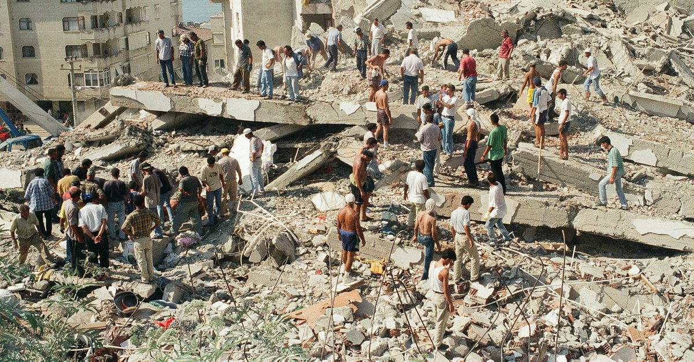
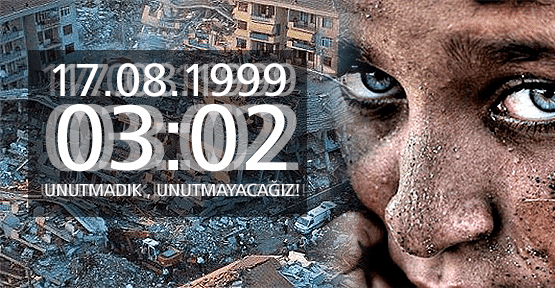
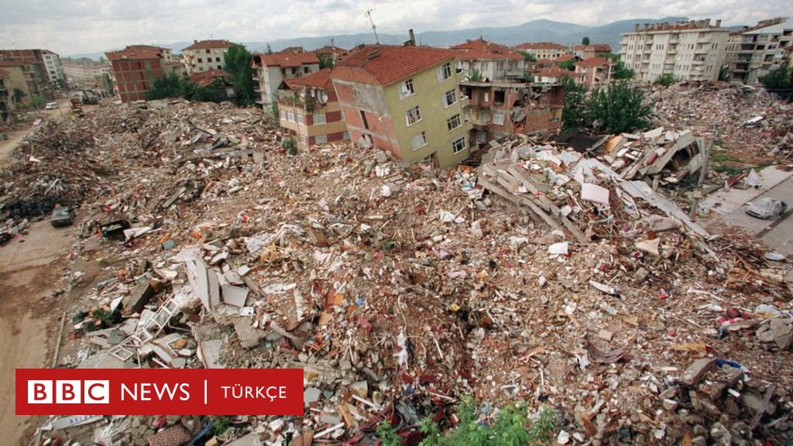
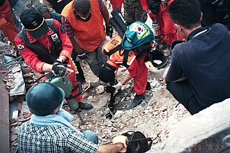

1999 Gölcük Depremi, İzmit Depremi, Marmara Depremi veya 17 Ağustos 1999 depremi, 17 Ağustos 1999 sabahı, yerel saatle 03.02'de meydana gelen Kocaeli/Gölcük merkezli deprem. Aletsel büyüklüğü Mw=7,4 (Kandilli Rasathanesi) veya Mw=7,6 (USGS) ölçülen deprem, büyük çapta can ve mal kaybına neden olmuştur.
17 Ağustos depremi tüm Marmara Bölgesi'nde, Ankara'dan İzmir'e kadar geniş bir alanda hissedildi. Resmî raporlara göre 17.480 ölüm, 23.781 yaralanma oldu. 505 kişi sakat kaldı. 285.211 ev, 42.902 iş yeri hasar gördü. 2010 yılında yayımlanan Meclis araştırması raporuna göre 18.373 kişi öldü. 48 bin 901 kişi ise yaralandı.
Yaklaşık 16.000.000 insan, depremden değişik düzeylerde etkilenmiştir. Bu nedenle Türkiye'nin yakın tarihini derinden etkileyen en önemli olaylardan biridir. Deprem gerek büyüklük, gerek etkilediği alanın genişliği, gerek de sebep olduğu maddi kayıplar açısından son yüzyılın en büyük depremlerinden biridir. Depremin Türkiye'nin önemli bir sanayi bölgesi olan Marmara Bölgesi'nde meydana gelmiş ve çok geniş bir coğrafyayı etkilemiş olması, ülkede büyük sıkıntılara neden olmuştur.
Deprem, 17 Ağustos 1999'da, saat 03.02'de, 40,70 kuzey enlemi ile 29,91 doğu boylamının tarif ettiği bölgede, İzmit'in 11 kilometre güneydoğusunda meydana gelmiştir.
Depremin büyüklüğü çeşitli kuruluşlar tarafından değişik değerlerde bildirilmiş ise de moment büyüklüğü Mw = 7,4-7,6 ve yüzey dalgası büyüklüğü Ms = 7,7 değerleri civarında değişmektedir.
Cisim Dalgası Şiddeti = 6,3 (USS)
Yüzey Dalgası Şiddeti = 7,8 (USGS)
Moment Şiddeti = 7,4 (Kandilli, USGS, Afet İşleri Genel Md. Deprem Araştırma Dairesi AİGM-DAD)
Kayıt Süresi Şiddeti = 6,7 (Kandilli)
Depremin odak derinliğinin 17 km olduğu ve sağ atımlı 120 km civarında bir fay hareketi ortaya çıktığı yapılan incelemelerle belirlenmiştir. Ana deprem dalgasının ardından büyüklüğü 4,0-5,0 değerlerinde olan çok sayıda artçı depremler meydana gelmiştir.
Deprem merkez üssüne en yakın ivme kaydı, Afet İşleri Genel Müdürlüğü Deprem Araştırma Dairesitarafından tüm Türkiye çapında kurulmuş ve işletilmekte olan Kuvvetli Yer Hareketi Kayıt Şebekesi'nin bir istasyonu olan İzmit Meteoroloji İstasyonu'ndan alınmıştır. Buna göre maksimum ivme, kuzey-güney doğrultusunda 163 mG, doğu-batı doğrultusunda 220 mG ve düşey doğrultuda 123 mG'dir. Her üç bileşen de birbirleri ile kıyaslanabilir büyüklüktedir. Ayrıca USGS ShakeMap Analysis'ten alınan verilere göre depremin maksimum spektral ivmesi; depremin merkezine yakın olan çoğu istasyon tarafından 1.5g seviyelerinde ölçülmüşken, en yüksek spektral ivme depremden 2.68 km uzaklıkta ki OBS_11 adlı istasyon tarafından 2.06g olarak ölçülmüştür.
Yakın tarihte bu bölgede Adapazarı merkez üssü olmak üzere 1943, 1957 ve 1967 yıllarında şiddetli depremler olmuştur. Geçmişteki tarihlere bakıldığında ortalama otuz senede bir bu bölgede büyük depremler olmaktadır. 1999 depreminden sonra da belirli periyotlarda ve çeşitli büyüklüklerde depremlerin beklenmesi, bu fay hattının karakteristik özelliğinden kaynaklanmaktadır.
Depremin bu kadar çok can kaybına yol açmasının sebebi olarak kaçak yapılar, standartlara uygun olmayan binalar, uygun olmayan gevşek zemindeki yapılaşmalar ve daha ucuza mal etmek için malzemeden çalan müteahhitler gösterilmektedir. Depremden sonra zorunlu deprem sigortası gibi birtakım düzenlemeler getirilmiştir.


Dış yardımlar
17 Ağustos depremi tüm dünyada büyük yankı uyandırmış, birçok ülkeden ve uluslararası kuruluşlardan gerek acil yardım ekibi gerek de araç gereç ile tıbbi ve insani yardım malzemeleri gönderilmiştir. Dönemin Sağlık Bakanı Osman Durmuş'un, Yunanistan ve Ermenistan'ın yardımlarını kabul etmemesi ülkede büyük tepki çekmiş, Durmuş'un istifası istenmiştir.Depremin ardından dönemin Amerika Birleşik Devletleri Başkanı Bill Clinton, eşi ve kızı ile birlikte İzmit'e gelerek Doğukışla'da bulunan çadır kenti ziyaret etmiştir.
Yardım ekipleri ulaşan ülke ve ekipler
Toplamda elli iki ülke yardım etmiştir. Almanya, Amerika Birleşik Devletleri, Azerbaycan, Bangladeş, Belçika, Birleşik Arap Emirlikleri, Birleşik Krallık, Cezayir, Fas, Finlandiya, Fransa, Gürcistan, Irak, İsrail, İsveç, İtalya, İzlanda, Japonya, Kıbrıs Rum Kesimi, KKTC, Macaristan, Malezya, Mısır, Pakistan, Rusya, Suudi Arabistan, Ürdün, Yunanistan ve Güney Kore; yardım eden ülkelerden bazılarıdır.
